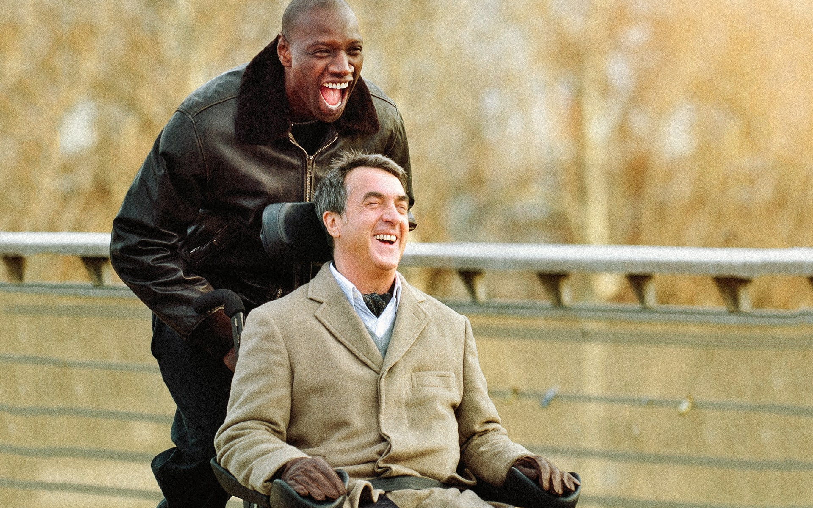
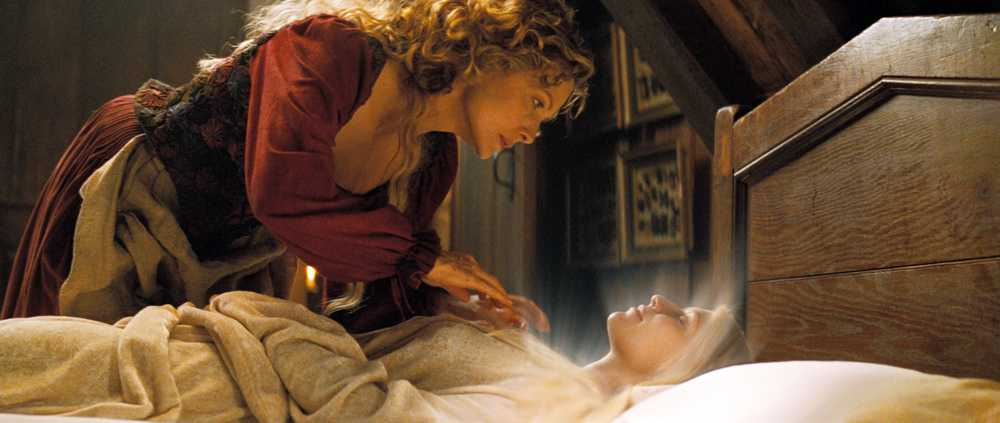
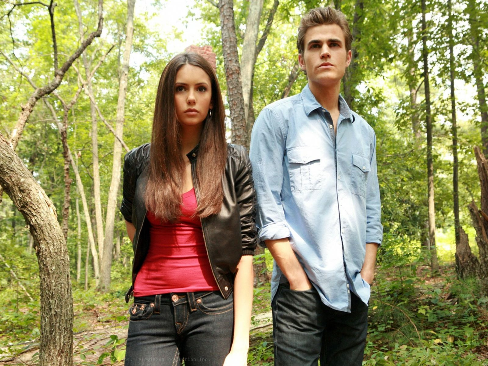
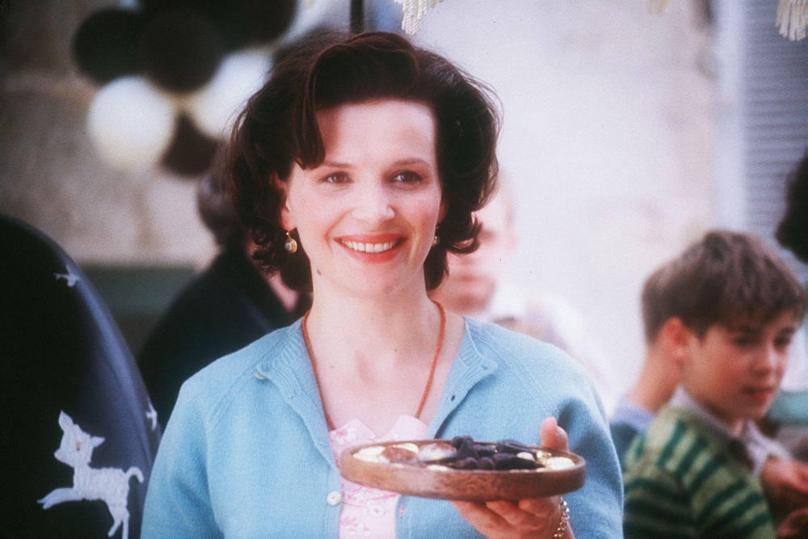
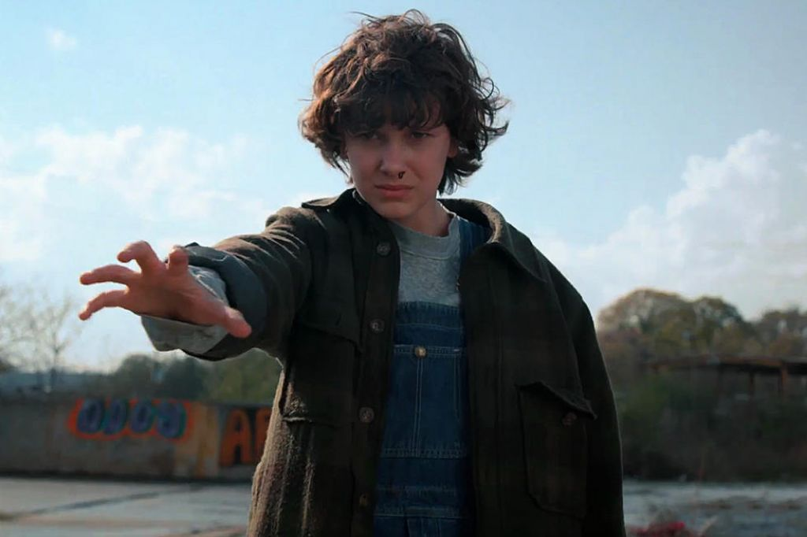
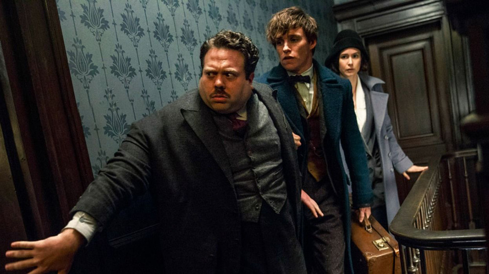
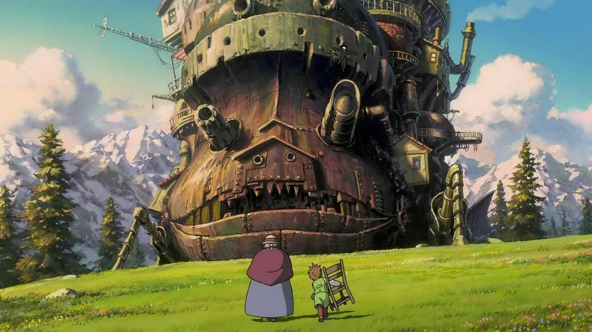

1+1
Пострадав в результате несчастного случая, богатый аристократ Филипп нанимает в помощники человека, который менее всего
подходит для этой работы, – молодого жителя предместья Дрисса, только что освободившегося из тюрьмы. Несмотря на то, что
Филипп прикован к инвалидному креслу, Дриссу удается привнести в размеренную жизнь аристократа дух приключений.

Любовь и голуби
Ликвидируя неисправность лебедки, Василий Кузякин получил травму и путевку на юг. Встретил роковую женщину Раису Захаровну
и... вернулся Вася с курорта не к себе в деревню, а в дом Раисы Захаровны. Началась для него новая жизнь, в которой было
много непонятного и интересного, но не было дома, где остались Надя, дети и голуби...

Звездная пыль
Маленькая английская деревенька отделена древней стеной от сверхъестественной параллельной вселенной, где царят магия и
волшебство. Молодой Тристан Торн опрометчиво обещает самой красивой девушке деревни, что принесёт ей слетевшую с неба
звезду, упавшую по ту сторону стены.

Хранители снов
Когда злой дух Кромешник посягает на самое дорогое – детские мечты, Северянин, Ледяной Джек, Кролик, Зубная Фея и Песочный
Человек впервые объединяются, чтобы создать команду Хранителей снов...

Дневники вампира
Прошло всего четыре месяца после трагической аварии, в которой погибли их родители, и 17-летняя Елена Гилберт
и ее 15-летний брат Джереми все еще пытаются оправиться от потери и вернуться к нормальной жизни. В начале
учебного года внимание Елены и ее друзей привлекает новый ученик,
загадочный и красивый Стефан Сальваторе. Стефан и Елена тут же чувствуют взаимную симпатию, но Елена даже
не подозревает, что Стефан – вампир, которому уже сотни лет, и который старается мирно жить среди людей,
несмотря на то, что его брат, Дэймон – воплощение вампирской жестокости и кровожадности...

Шоколад
Как-то зимним днем в тихом французском городке появляется молодая женщина по имени Виенн. А чуть позже она
открывает необычный шоколадный магазин, предлагая посетителям испытать новое удовольствие. И действительно,
побывав у нее однажды, люди вновь и вновь поддаются сладкому очарованию. Просто Виенн волшебным образом
угадывает чужие желания. И они сбываются! Но только когда в город приезжает Ру, Виенн, наконец, смогла
понять свои собственные…

Доктор Сон
Прошло много лет с тех пор, как мальчик с паранормальными способностями Дэнни Торранс пережил кошмарный
сезон в отеле «Оверлук», где стал свидетелем безумия и гибели своего отца. Повзрослев, Дэн вёл жизнь
маргинала-алкоголика, а теперь пытается завязать и даже устроился на работу в дом престарелых. Там он
безошибочно определяет, кому из постояльцев подошла очередь покинуть этот мир, за что и получил прозвище
Доктор Сон. Однажды с Дэном устанавливает связь невероятно одарённая «сияющая» девочка Абра. Вскоре ей
потребуется его помощь, чтобы противостоять членам организации «Истинный узел» – группы охотников за
особенными детьми.

Очень странные дела
1980-е годы, тихий провинциальный американский городок. Благоприятное течение местной жизни нарушает
загадочное исчезновение подростка по имени Уилл. Выяснить обстоятельства дела полны решимости родные
мальчика и местный шериф, также события затрагивают лучшего друга Уилла – Майка. Он начинает собственное
расследование. Майк уверен, что близок к разгадке, и теперь ему предстоит оказаться в эпицентре ожесточенной
битвы потусторонних сил.
Рапунцель
Обаятельный разбойник Флинн путешествует по жизни с легкостью, лишь потому, что он красив, болтлив и удачлив.
И, казалось, фортуна всегда на его стороне, пока однажды он не выбирает высокую башню в густой чаще леса в
качестве «спокойного» убежища. Флинн оказывается связанным по рукам и ногам юной красавицей по имени
Рапунцель. Если вы думаете, что самое интересное в ней - это 21 метр волшебных золотистых волос, то вы
заблуждаетесь! Запертая в башне и отчаянно ищущая приключений, Рапунцель решает использовать Флинна в
качестве билета в большой мир. Сначала комичное похищение, затем невинный шантаж - и вот наши герои на воле...

Фантастические твари
Поиск и изучение необычайных волшебных существ приводят магозоолога Ньюта Саламандера в Нью-Йорк.
Скорее всего, он отбыл бы на поезде дальше, если бы не «немаг» (так в Америке называют магглов) по имени
Якоб, оставленный в неположенном месте магический чемодан и побег из него фантастических животных Ньюта.
Форрест Гамп
От лица главного героя Форреста Гампа, слабоумного безобидного человека с благородным и открытым сердцем,
рассказывается история его необыкновенной жизни. Фантастическим образом превращается он в известного
футболиста, героя войны, преуспевающего бизнесмена. Он становится миллиардером, но остается таким же
бесхитростным, глупым и добрым. Форреста ждет постоянный успех во всем, а он любит девочку, с которой
дружил в детстве, но взаимность приходит слишком поздно.

Ходячий замок
Злая ведьма заточила 18-летнюю Софи в тело старухи. Девушка-бабушка бежит из города куда глаза глядят и
встречает удивительный дом на ножках, где знакомится с могущественным волшебником Хаулом и демоном
Кальцифером. Кальцифер должен служить Хаулу по договору, условия которого он не может разглашать.
Девушка и демон решают помочь друг другу избавиться от злых чар.